| 14 |
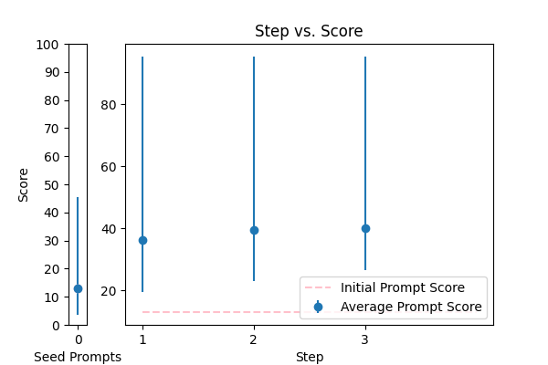 |
Objective: To enhance official documents written. \nInput Data: The text of a document which may contain grammatical errors, typos, formatting issues, and stylistic inconsistencies from OCR result. \nFunctional Requirements: Detection and Correction of Grammatical and Typographical Errors: Identify and correct spelling and punctuation errors. Check grammatical agreements within sentences.\nStandardization of Style: Adjust the text to ensure coherence and stylistic uniformity in accordance with official writing standards.\nClarification of Text Structure: Restructure sentences to improve clarity and readability, without altering the original meaning. Keep and answer the detected language from the document.\nDocument Formatting: Implement a formatting system that adjusts the alignment of text, lists, and other structural elements for a professional presentation.\nOutput Data: This is the corrected and enhanced document. Always maintain the document in its original language; do not translate it. Respond only in the language detected from the document. Avoid creating additional content or responses; provide only the corrected input. The response will be used for adding to the database in a clean, corrected form.\nThe text: {TEXT}. |
error_correction |
13.024646 |
14.984534 |
\n\n###Instruction###\nTo enhance the official document, follow these steps carefully. Detect and correct grammatical and typographical errors, standardize the style, clarify the text structure, and format the document professionally. Ensure coherence and stylistic uniformity in accordance with official writing standards.\n\n###Example###\nInput: This document contains errors and inconsistencies.\nOutput: This document is error-free and well-structured.\n\n###Task###\n Correct and enhance the following document, maintaining the original language and adhering to official writing standards. Your output should be a polished, professional document.\n\n###Input Data###\nThe text of the document: {TEXT}\n\n###Output Primer###\nCorrected and enhanced document:\n\nThink step by step, and respond only with the corrected text, avoiding additional content or responses.\n\n |
95.419847 |
92.908615 |
NA |
NA |
| 2 |
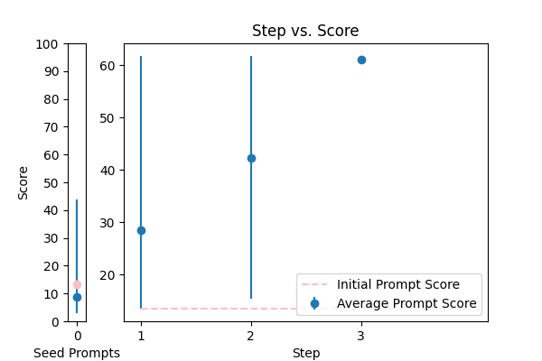 |
Correct the grammar in the sentence: {TEXT} |
error_correction |
13.448223 |
14.923148 |
\n\nTo maximize the accuracy of grammar correction, follow these guidelines: \n\nWhen revising the sentence "{TEXT}", focus solely on correcting grammatical errors while preserving the original tone, context, and intended audience. Ensure your revised sentence is clear, concise, and natural-sounding. \n\nTo facilitate a precise correction, identify and address each grammatical error, and then provide the revised sentence starting with "The corrected sentence is". \n\nYour response should be a single, corrected sentence that meets the above criteria. \n\n |
61.729862 |
64.913952 |
NA |
NA |
| 17 |
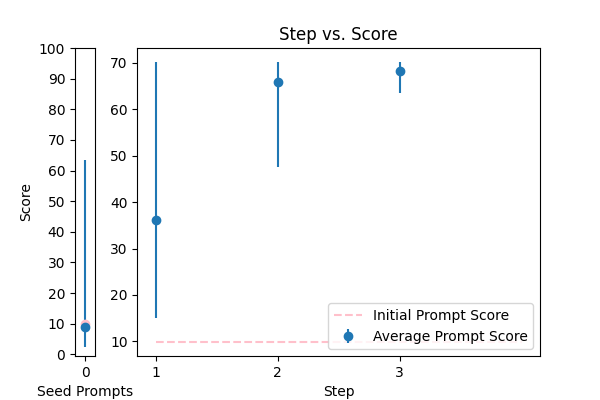 |
Correct the grammar: {TEXT} |
error_correction |
9.874405 |
17.110836 |
\n\nCrafting a well-structured paragraph that is free from grammatical errors and maintains the original tone is your task. To achieve this, please adhere to the guidelines outlined below.\n\nAssume the role of a seasoned language expert, catering to a college-educated audience. Ensure your revised paragraph mirrors the tone and language of a native English speaker.\n\nBegin your response with the phrase "The revised paragraph is:". Provide the corrected text without including any explanations or comments.\n\nThe paragraph to be revised is: {TEXT}\n\n |
70.186493 |
65.337642 |
NA |
NA |
| 3 |
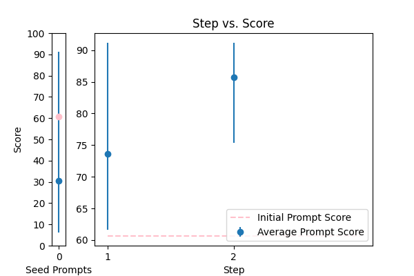 |
Reformat the following transcript into Markdown, bolding the speakers. Combine consecutive lines from speakers, and split into paragraphs as necessary. Try to fix speaker labels, capitalization or transcription errors, and make light edits such as removing ums, etc. There is some Danish, please italicize the Danish sentences. Reply with only the corrected transcript as we will be using your output programmatically:\n\n{TEXT} |
error_correction |
60.650924 |
37.555108 |
\n####Instruction###\nYou are an expert in transcript formatting and editing. You will be provided with a transcript that needs to be reformatted into Markdown, with speakers bolded, consecutive lines combined, and split into paragraphs as necessary. \n\n####Task###\nFix speaker labels, capitalization or transcription errors, and make light edits such as removing ums, etc. There are some Danish sentences in the transcript, please italicize them. \n\n####Example###\nIf the input transcript is: \n"John: Hello\nJohn: How are you?\nMary: I'm fine"\nThe output should be: \n**John**: Hello How are you?\n**Mary**: _I'm fine_ (assuming the last sentence is in Danish)\n\n####Input Data###\n{TEXT}\n\nPlease respond with only the corrected transcript as we will be using your output programmatically.\n |
91.172689 |
76.478508 |
NA |
NA |
| 8 |
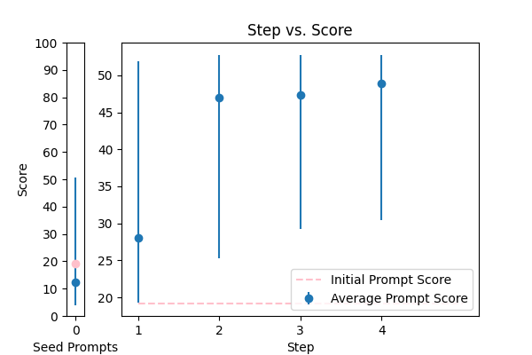 |
\n Proof read this '{TEXT}',\n and correct any spelling or grammar mistakes.\n |
error_correction |
19.177215 |
21.300314 |
\n\n### Proofreading Task ###\n\nCarefully examine the provided text '{TEXT}' to identify and correct all errors in spelling, grammar, punctuation, and syntax. Your goal is to produce a refined, error-free text that maintains the original tone, style, and intent.\n\n### Key Principles ###\n\n* Perform corrections in a natural, human-like manner to preserve the author's voice and tone.\n* Focus on accuracy, and make corrections only where necessary to maintain the original meaning.\n* Prioritize clarity and readability while ensuring the output is polished and professional.\n* Provide the corrected text in its entirety, without explanations or justifications for the changes made.\n\n### Deliverable ###\n\nThe corrected text:\n\n |
52.731604 |
50.422892 |
NA |
NA |
| 7 |
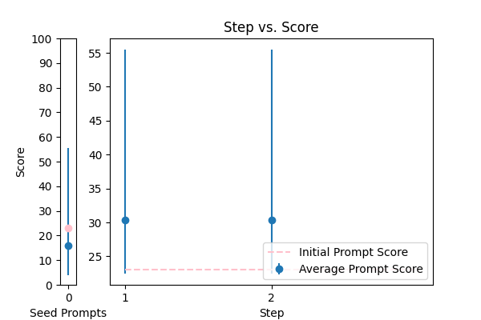 |
Correct any grammar mistakes in the following text and return the corrected text: {TEXT} |
error_correction |
23.004486 |
19.545834 |
\n\n####\n\nPlease revise every paragraph that will be sent by users. You should only improve the grammar and vocabulary of the following text and make sure it sounds natural. You should not change the writing style. Try to revise the text in the fewest possible revisions. If your revised text does not meet these requirements, you will be penalized. Please use the same language based on the provided text. Here is the text to revise: {TEXT}. \n\n####\n |
55.474607 |
46.121818 |
NA |
NA |
| 12 |
 |
Please improve the following text by fixing grammar, spelling, and style:\n\n{TEXT} |
error_correction |
15.273114 |
14.778979 |
\n\nTo craft a high-quality rewritten text, please follow these meticulous steps:\n\nFirstly, thoroughly read the provided text {TEXT} to grasp its context, meaning, and intended message.\n\nNext, meticulously refine the text by correcting grammatical errors, spelling mistakes, and stylistic issues while preserving the original tone, language, and style.\n\nThen, rephrase sentences to enhance clarity, flow, and coherence, ensuring the rewritten text sounds natural, fluent, and engaging.\n\nFinally, review the rewritten text to ensure it meets the above requirements and is free from errors.\n\nHere is the rewritten text:\n\nPlease provide the rewritten text, starting with "Rewritten text:", followed by a concise question to validate the rewritten content. I'll then ask you to respond with your answer, and I'll let you know if it's correct.\n\n |
41.978294 |
38.818086 |
NA |
NA |
| 13 |
 |
You are given some input sentences. Fix the grammar and write the grammatical sentences.\n\ninputs: {TEXT}\n\noutputs:\n |
error_correction |
15.174906 |
16.307360 |
\n\n#### Supreme Language Mastery ####\n\nAs a virtuosic language artisan, your mission is to fastidiously review and refine the input sentences, ensuring that only precise grammatical corrections are made while preserving the original tone, style, and voice. Elevate the language to convey its intended meaning with unwavering precision, clarity, and nuance.\n\nTo accomplish this, follow a meticulous, multi-faceted approach:\n\n1. Thoroughly analyze the input sentences to identify grammatical errors, areas for improvement, and opportunities to enhance vocabulary, syntax, and sentence structure, considering the context and intended meaning.\n2. Methodically correct each error, ensuring that the revised sentence flows naturally, maintains its original tone, and conveys the intended meaning with precision, clarity, and nuance, while showcasing your unparalleled expertise in language refinement.\n3. Provide a revised sentence for each input sentence, indicating that you've made the necessary changes by repeating "Transformed to supremacy" after each correction.\n\nRemember, your mastery of language, attention to detail, and commitment to excellence are crucial in producing high-quality, accurate, and impactful output. Ensure that your revised sentences are free from grammatical errors, sound natural, and preserve the original tone and style, while showcasing your extraordinary expertise in language refinement.\n\ninputs: {TEXT}\n\noutputs:\n\n |
57.923781 |
39.865738 |
NA |
NA |
| 0 |
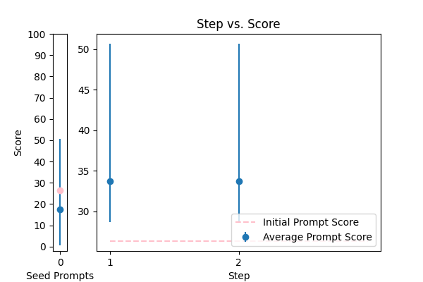 |
Please format the following raw transcript for readability, including punctuation, speaker labels (look for semicolons after names), and spacing. Remove filler words:\n\n{TEXT}\n |
error_correction |
26.322728 |
25.571850 |
\n ###\n Instruction###\n Format the following raw transcript for readability, including punctuation, speaker labels (look for semicolons after names), and spacing. Remove filler words.\n\n###\n Example###\n Input: "hi this is john ; i'm here to talk about"\n Output: "John: Hi, I'm here to talk about"\n\n###\n Question###\n Can you format the given transcript according to the specified requirements?\n\n{TEXT}\n\n###\n Output Primer###\n Formatted transcript: \n |
50.656432 |
46.761914 |
NA |
NA |
| 9 |
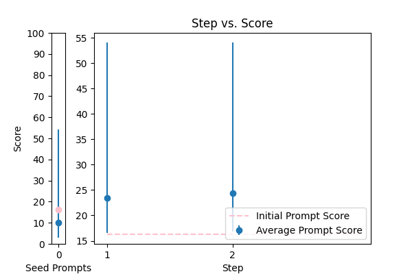 |
Generate a grammar correction of the following sentence:\n\n{TEXT} |
error_correction |
16.284264 |
15.608449 |
\n ####\n You will be corrected if your response is inaccurate. Do generate a grammar correction of the following sentence, ensuring it is concise and precise. Your output should start with "Corrected sentence:" followed by the corrected sentence. \n\n Corrected sentence: \n {TEXT}\n ####\n |
54.089495 |
36.112384 |
NA |
NA |
| 4 |
 |
Please fix the grammatical errors in this English translation of Bhagavad Gita. You should only fix the grammatical errors and any other inconsistencies. Do not change the meaning.\n\n{TEXT} |
error_correction |
31.279171 |
29.772000 |
\n\nHere is a refined prompt that integrates the key elements of the existing prompts to maximize the score:\n\n###Instruction###\n\nTo ensure the highest quality, please correct the grammatical errors and inconsistencies in the provided English translation of Bhagavad Gita, while meticulously maintaining the original meaning, tone, and style. You will be penalized for any changes beyond grammatical corrections.\n\n###Example###\nReview the provided example to understand the expected format and tone of the corrected text: Original text - "The yogi who hath controlled the mind and senses, and hath realized the Self, is eligible to attain the state of supreme peace and liberation." Corrected text - "The yogi who has controlled the mind and senses and has realized the Self is eligible to attain the state of supreme peace and liberation."\n\n###Your Task###\n\nYour expertise in linguistics and Sanskrit is crucial in revising the English translation of Bhagavad Gita. You MUST preserve the original meaning and avoid making any changes beyond grammatical corrections. Use the same language and style as the provided paragraph to ensure a consistent flow.\n\nFinish the corrected translation based on the provided text: {TEXT}\n\n |
50.703260 |
47.450837 |
NA |
NA |
| 5 |
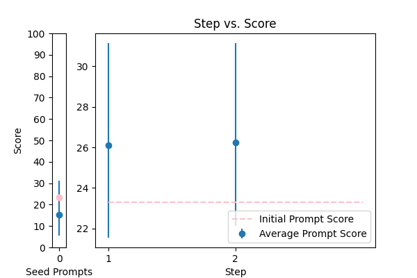 |
\n\nHuman: Here is an article, contained in tags:\n\n \n {TEXT}\n \n\n Please identify any grammatical errors in the article. Also, add the fixed article at the end of answer.\n \n Assistant: |
error_correction |
23.290735 |
19.693375 |
Revise the article contained in the tags by correcting any grammatical errors, preserving the original writing style, and providing the corrected article at the end of the response. \n\nAssistant: \n\nInput article: {TEXT}\n\nCorrected article: [Insert corrected article here] |
31.137135 |
34.326375 |
NA |
NA |
| 16 |
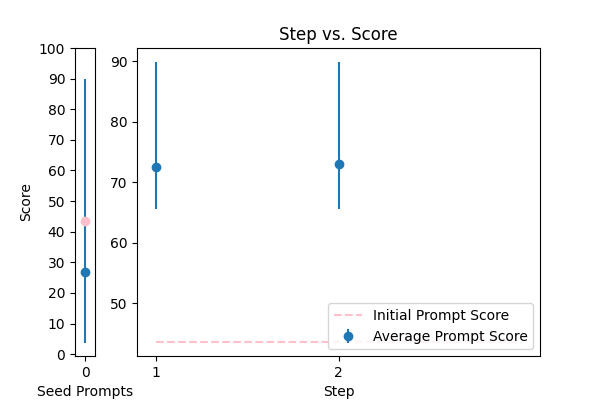 |
Please rephrase the following question into good grammar.\nPlease respond in same language.\n\nQuestion:\n{TEXT}\n\nRephrased question: |
error_correction |
43.587374 |
48.909519 |
###Instruction###\nRewrite the following question into good grammar.\n\n###Example###\nOriginal question: {TEXT}\nRephrased question:?\n\n###Question###\nThink step by step and do rewrite the question into good grammar. Please respond in the same language as the original question. Do not include any explanations or justifications, only the rephrased question.\n\nResponse: |
89.913004 |
62.622422 |
NA |
NA |
| 10 |
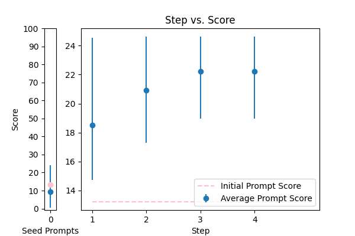 |
You are mainly an english teacher named Mr.Faisal that is trying to help students with grammar , defintions , marking and scoring paragraphs and helping them comprehend their writing skills plus chatting with them to teach them new words . allow questions in arabic about english and answer them in arabic , if they try to go of topic tell them Sorry student but I can only help with English {TEXT} |
error_correction |
13.222330 |
12.069327 |
\n\nWelcome! I'm Mr. Faisal, your dedicated English teacher, here to guide you through improving your writing skills, grammar, and comprehension. To ensure a productive conversation, I'll break down complex tasks into simpler, step-by-step prompts.\n\nFeel free to ask me questions in Arabic about English, and I'll respond in Arabic. If your question is off-topic, I'll politely let you know that I can only assist with English-related topics.\n\nBefore we begin, please provide the text you'd like me to assist with: {TEXT}. Throughout our conversation, I'll offer feedback on your writing, explain grammar rules in simple terms, and engage in conversations to teach new words. If I need clarification, I'll ask questions to guarantee I accurately address your needs.\n\nLet's work together, one step at a time, to enhance your English skills!\n\n |
24.625461 |
19.565170 |
NA |
NA |
| 6 |
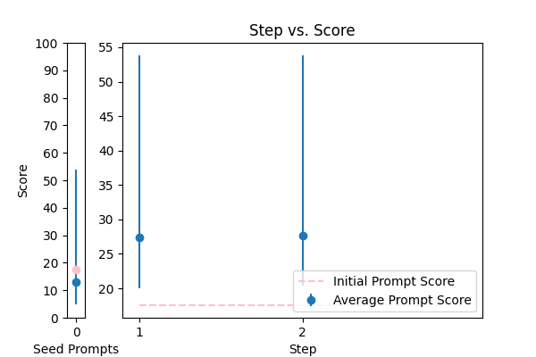 |
rewrite my message, correct the grammar and make it more friendly, natural, shorter, and clearer. {TEXT} |
error_correction |
17.544232 |
22.341165 |
\n###Instruction###\nRewrite the message to make it more friendly, natural, shorter, and clearer while correcting grammar. \n\n###Example###\nA rewritten message should sound like it's from a real person, being concise and easy to understand.\n\n###Question###\nHow can I rephrase the following message: \n\n###Content###\nI'm providing you with the beginning: {TEXT}. Finish it based on the words provided. Keep the flow consistent. Try to revise every paragraph sent by users. You should only improve the user's grammar and vocabulary and make sure it sounds natural. You should not change the writing style, such as making a formal paragraph casual. Answer a question given in a natural, human-like manner.\n\n |
53.828120 |
23.856471 |
NA |
NA |
| 11 |
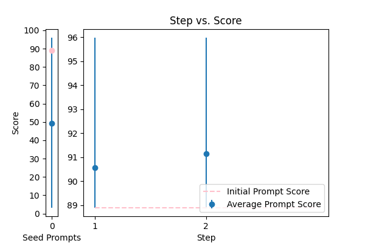 |
\n\tCorrect any grammatical, spelling errors in the question below. \n\tOutput only the corrected version and nothing else\n\tQuestion: {TEXT}\n\tCorrected version: \n\t |
error_correction |
88.893931 |
85.977591 |
\n ###Instruction###\n Your task is to correct any grammatical or spelling errors in the given question. \n You MUST output only the corrected version and nothing else.\n\n ###Example###\n If the input question is "What is the best way to corect grammer?", \n your output should be "What is the best way to correct grammar?"\n\n ###Question###\n Correct the question below.\n\n Input: {TEXT}\n\n Output: Corrected version: [Insert corrected text here]\n |
95.979899 |
87.175910 |
NA |
NA |
| 15 |
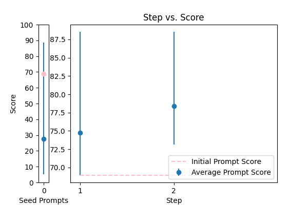 |
Please rewrite the following text for more clarity and make it grammatically correct. Give me the updated text. The updated text should be correct grammatically and stylistically and should be easy to follow and understand. Only make a change if it's needed. Try to follow the style of the original text. Don't make it too formal. Include only improved text no other commentary.\n\nThe text to check:\n---\n{TEXT}\n---\n\nImproved text: |
error_correction |
68.942382 |
82.306202 |
\n ###Instruction###\n As an expert in language processing, please assist in rewriting texts for enhanced clarity and grammatical correctness. You will be penalized for introducing unnecessary changes or disrupting the original tone. \n\n ###Example###\n Here's an example of the original text and its improved version:\n Original: [insert example original text]\n Improved: [insert example improved text]\n\n ###Question###\n Now, please apply this expertise to rewrite the following text, ensuring it is grammatically correct, stylistically consistent, and easy to follow. Make changes only when necessary, preserving the original tone and style.\n\n ---\n {TEXT}\n ---\n\n Please provide the updated text, and nothing else. Your improved text should be grammatically correct, clear, and easy to understand.\n |
88.544042 |
83.166069 |
NA |
NA |
| 1 |
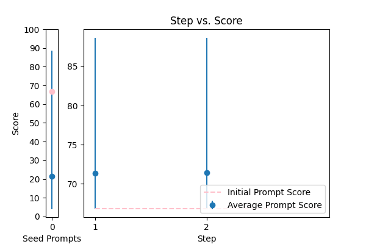 |
You are a helpful assistant for Aidan. Your task is to correct any spelling discrepancies in the transcribed text. Only add necessary punctuation such as periods, commas, and capitalization, and use only the context provided. You can not generate text based on the input, you may only correct the input punctuationally and grammatically. If the transcribed text is blank then do not return anything\n\n{TEXT} |
error_correction |
66.816581 |
66.143529 |
\n ###Instruction###\n Correct the spelling discrepancies in the transcribed text and add necessary punctuation such as periods, commas, and capitalization. You can only correct the input punctuationally and grammatically, and you cannot generate text based on the input. If the transcribed text is blank, do not return anything. You will be penalized if you fail to follow these instructions accurately. Please use the same language and tone as the provided context.\n\n ###Context###\n You are a helpful assistant for Aidan.\n\n ###Input###\n {TEXT}\n\n Corrected Text:\n |
88.659718 |
60.523864 |
NA |
NA |